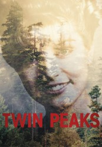

")
Alternativ: Twin Peaks
Auszeichnungen: 3 GoldenGlobes gewonnen
 
 IMDB-Wertung: 8.9 / 10
IMDB-Wertung: 8.9 / 10  Metascore:
Metascore: 
Twin Peaks ist eine kleine Stadt im Norden der USA, unweit der kanadischen Grenze. Hier wird eines Morgens die Leiche der 17-jährigen Laura Palmer gefunden, die vor ihrem Tod vergewaltigt und schwer misshandelt wurde. Das Verbrechen reißt den Ort jäh aus seiner Verschlafenheit und scheinbaren Ruhe und konfrontiert seine Einwohner mit den abgründigen Seiten des Lebens. Offensichtlich geht in Twin Peaks einiges vor, was sie bislang nicht wahrhaben wollten...
Jahr: 1990
Dauer: 94 Minuten
FSK: 16
Land: USA Studio: ABCTonspuren: DD2.0 - ,
Untertitel:
Auflösung: 720p (960x720) Größe: 3799 MB
Genre: Thriller, Drama, Krimi, Mystery, TV-Serie
Regisseur:  David Lynch, Lesli Linka Glatter, Caleb Deschanel, Duwayne Dunham, Tim Hunter, Todd Holland, Tina Rathborne, Graeme Clifford, Mark Frost, Uli Edel, James Foley, Stephen Gyllenhaal, Diane Keaton, Jonathan Sanger
David Lynch, Lesli Linka Glatter, Caleb Deschanel, Duwayne Dunham, Tim Hunter, Todd Holland, Tina Rathborne, Graeme Clifford, Mark Frost, Uli Edel, James Foley, Stephen Gyllenhaal, Diane Keaton, Jonathan Sanger
Drehbuch: Silvio Soldini
Soundtrack:
Darsteller:
 Kyle MacLachlan als Special Agent Dale Cooper
Kyle MacLachlan als Special Agent Dale Cooper Michael Ontkean als Sheriff Harry S. Truman
Michael Ontkean als Sheriff Harry S. Truman Mädchen Amick als Shelly Johnson
Mädchen Amick als Shelly Johnson Richard Beymer als Benjamin Horne
Richard Beymer als Benjamin Horne Lara Flynn Boyle als Donna Hayward
Lara Flynn Boyle als Donna Hayward Sherilyn Fenn als Audrey Horne
Sherilyn Fenn als Audrey Horne Warren Frost als Dr. Will Hayward
Warren Frost als Dr. Will Hayward Peggy Lipton als Norma Jennings
Peggy Lipton als Norma Jennings James Marshall als James Hurley
James Marshall als James Hurley Everett McGill als Big Ed Hurley
Everett McGill als Big Ed Hurley Jack Nance als Pete Martell
Jack Nance als Pete Martell Joan Chen als Jocelyn Packard
Joan Chen als Jocelyn Packard Kimmy Robertson als Lucy Moran
Kimmy Robertson als Lucy Moran Piper Laurie als Catherine Martell
Piper Laurie als Catherine Martell Ray Wise als Leland Palmer
Ray Wise als Leland Palmer Sheryl Lee als Maddy Ferguson
Sheryl Lee als Maddy Ferguson Russ Tamblyn als Dr. Lawrence Jacoby
Russ Tamblyn als Dr. Lawrence Jacoby Don S. Davis als Maj. Garland Briggs
Don S. Davis als Maj. Garland Briggs Chris Mulkey als Hank Jennings
Chris Mulkey als Hank Jennings Grace Zabriskie als Sarah Palmer
Grace Zabriskie als Sarah Palmer Mary Jo Deschanel als Eileen Hayward
Mary Jo Deschanel als Eileen Hayward Kenneth Welsh als Windom Earle
Kenneth Welsh als Windom Earle David Patrick Kelly als Jerry Horne
David Patrick Kelly als Jerry Horne Miguel Ferrer als FBI Agent Albert Rosenfield
Miguel Ferrer als FBI Agent Albert Rosenfield Charlotte Stewart als Betty Briggs
Charlotte Stewart als Betty Briggs David Lynch als FBI Regional Bureau Chief Gordon Cole
David Lynch als FBI Regional Bureau Chief Gordon Cole Heather Graham als Annie Blackburn
Heather Graham als Annie Blackburn Dan O'Herlihy als Andrew Packard
Dan O'Herlihy als Andrew Packard Billy Zane als John Justice Wheeler
Billy Zane als John Justice Wheeler Michael Parks als Jean Renault
Michael Parks als Jean Renault Carel Struycken als Giant
Carel Struycken als Giant Lenny von Dohlen als Harold Smith
Lenny von Dohlen als Harold Smith Brenda Strong als Jones
Brenda Strong als Jones Hank Worden als Waiter
Hank Worden als WaiterDatei: X:\HD-Serien\Twin Peaks\S01\Twin Peaks S01E01 Alternative Internationale Version.mkv seit 06.09.2016
Festplatte: HD Serien(SU-Z)+Dokus+Musik
 Es gibt insgesamt 182 Filme in der Gruppe 'HD-Serien'
Es gibt insgesamt 182 Filme in der Gruppe 'HD-Serien'